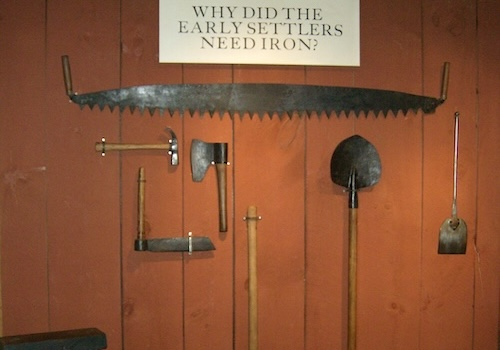
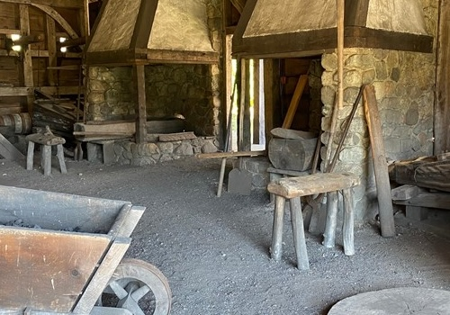
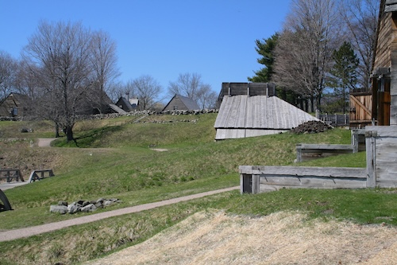
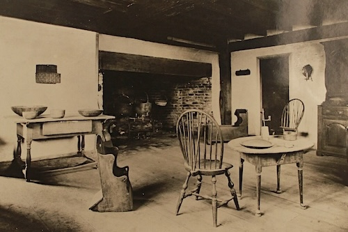

If you visit the Saugus Iron Works in Massachusetts, you will meet authentic Rangers. They will give you and your family or school group a guided tour and answer your questions.
Visit the museum. See artifacts from the original Iron Works. Learn about the history of Native Americans in Massachusetts, and early ironmaking.

You may also see a demonstration of a park ranger trained as a blacksmith creating nails from iron rods.

Picnic on the grounds. Take a guided tour of the restored blast furnace, forge and rolling and slitting mill.

You may visit the Iron Works House, a restored home of the 1600's.

You can contact Ranger UNKNOWN at the Saugus Iron Works.
Find information or arrange a visit to the Saugus Iron Works.